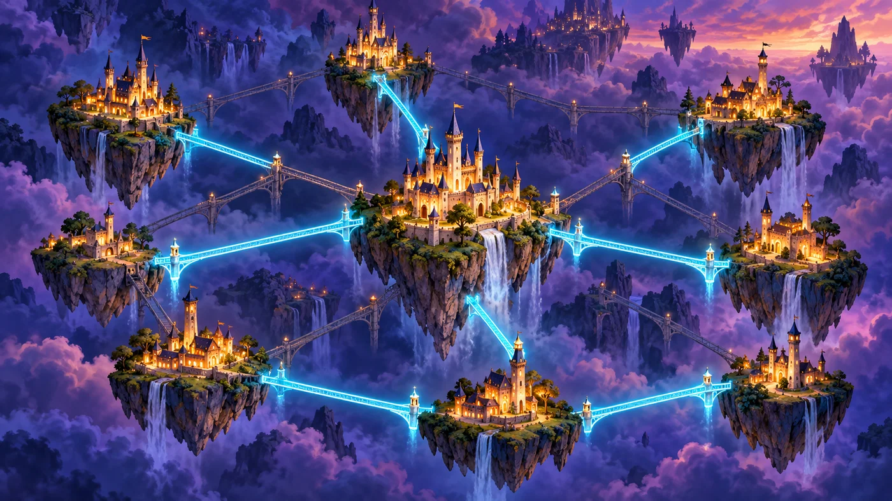
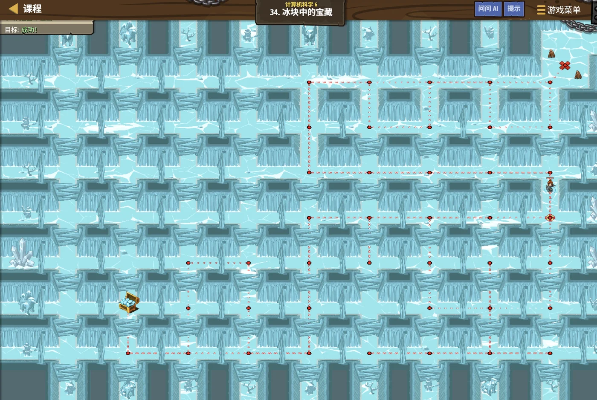

故事：冰室迷宫深处藏着宝藏，可这里的门很灵敏——脚步声一响就会打开，
走回头路只会把自己困住。
更麻烦的是：拿到宝藏还得原路回到出口。
贺舒曼把镜子举高：先把迷宫当成一张图，把走过的房间一一记下来。
扣哒考级 · GESP C++ 八级 · 第 6 单元 | 寂灭王座 THE THRONE
王国交通网 树与图的进阶应用
Advanced Trees & Graphs

贺舒曼
镜中先知 · 你的向导
王座前摊着一张王国地图：十几座城池，城与城之间画着道路。
工部尚书开口了：陛下要修路，要求所有城池都连通，但总长度要最短。
你盯着那团绕来绕去的线，一时不知从哪儿下手。
贺舒曼指着其中几条：先别管全部。你只需要挑出"最少的那几条"。
工部尚书开口了：陛下要修路，要求所有城池都连通，但总长度要最短。
你盯着那团绕来绕去的线，一时不知从哪儿下手。
贺舒曼指着其中几条：先别管全部。你只需要挑出"最少的那几条"。
贺舒曼 · 镜中先知
七级我们学过"图怎么存、怎么走"。这一单元往前一步：图能做哪些"有用的事"？比如：用最少的道路把所有的城连起来、判断有没有绕圈的坏路、 安排施工顺序……
这些都是树与图在真实问题里的应用。
assets/illustrations/py-L8-06-01_kingdom_roads.webp
【配图位】俯瞰的王国地图：十几座城以光点表示，城与城之间连着发光的道路，其中一部分道路更亮（被选中的生成树），其余较暗；地图一角摊着卷起的工程图纸与铜制圆规。
0 单元导语与目标
Unit Overview
0.1 学习目标
0.2 考纲对照
1学完这个单元，你将能……
- 说清"生成树"是什么
- 用贪心思想理解最小生成树（Kruskal 与 Prim）
- 判断加一条边会不会形成环
- 用出入度理解拓扑排序
- 判断一个有向图有没有环
- 用 Dijkstra 求单源最短路径、用 Floyd 求任意两点最短路
2对标 GESP 考纲（C++ 八级）
- 掌握最小生成树的两种算法：Kruskal（按边）与 Prim（按点）
- 掌握判断图连通性、环的基本方法
- 掌握最短路径算法：Dijkstra（单源）与 Floyd（多源）
- 了解拓扑排序的基本思想与应用
- 考核目标：能对图做连通性分析并解决简单的应用问题
1 王国地图是一张图
The Kingdom Map Is a Graph
1.1 地图就是点加边
先回顾一下：地图上的城池就是顶点，道路就是边。
| 王国里的说法 | 图论里的说法 |
|---|---|
| 城池 | 顶点 |
| 道路 | 边 |
| 道路长度 | 边的权值 |
| 两个城能互相走到 | 两点连通 |
| 有条路绕了一圈回到原地 | 环 |
| 只有单行道的路线 | 有向边 |
1.2 本节要回答的三个问题
本节要回答的三个问题：
① 用最少的道路把所有城池连通 → 生成树
② 这条路加了会不会形成环 → 连通性判断
③ 施工必须按什么顺序 → 拓扑排序
① 用最少的道路把所有城池连通 → 生成树
② 这条路加了会不会形成环 → 连通性判断
③ 施工必须按什么顺序 → 拓扑排序
2 生成树：用最少的路连通
Spanning Tree
2.1 生成树的两条性质
图 2（SVG）：连通所有顶点、且不绕圈的最少边数
生成树的两条性质：
① 连通——所有顶点都能到达；
② 无环——没有任何一圈多余的边。
n 个顶点的生成树，恰好有 n-1 条边——一条不多，一条不少。
① 连通——所有顶点都能到达；
② 无环——没有任何一圈多余的边。
n 个顶点的生成树，恰好有 n-1 条边——一条不多，一条不少。
2.2 最小生成树：贪心挑最短的边
最小生成树：贪心挑最短的边（Kruskal 思想）
C++
// 把所有边按"长度"从小到大排序
sort(edges.begin(), edges.end(),
[](const Edge& a, const Edge& b) { return a.w < b.w; });
int total = 0;
int count = 0;
for (Edge& e : edges) {
if (unite(e.u, e.v)) { // 关键判断：加这条边不会形成环
total = total + e.w;
count = count + 1;
if (count == n - 1) break; // 已经够 n-1 条了
}
}
cout << "最短总长度：" << total << endl;
思路 贪心地从最短的边开始挑，只要不绕圈就要它——挑够 n-1 条就停
2.3 为什么这条贪心是对的
为什么这条贪心是对的？
因为"造成环"的边一定是多余的——去掉它，连通性不受影响。
所以每次都优先要"最短且不绕圈"的边，最后得到的一定是最短的连通方案。
这是贪心算法里少数能够严格证明正确性的经典例子。
所以每次都优先要"最短且不绕圈"的边，最后得到的一定是最短的连通方案。
这是贪心算法里少数能够严格证明正确性的经典例子。

assets/illustrations/py-L8-06-02_spanning_tree_scene.webp
【配图位】王国地图上散着若干座发光的城邦，其间画着许多条候选道路；其中一部分道路被高亮成金色，恰好把所有城邦连成一片、且没有绕成圈；一名学徒把没被选中的路用细线标灰。
2.4 另一种长大方式：Prim 算法
两种最小生成树算法怎么区分（真题原话）：
注意：两种算法求出的最小生成树，总权值一定相同，但选中的边集不一定完全一样（答案不唯一时）。
Kruskal：按边做事——把所有边排序，从小到大试着加，用并查集判断会不会成环。适合稀疏图（边少）。Prim：按点做事——从一个点开始"长大"，每次挑一条连接"已连通"与"未连通"的最短边。适合稠密图（边多）。注意：两种算法求出的最小生成树，总权值一定相同，但选中的边集不一定完全一样（答案不唯一时）。
Prim：从一个点开始长大
C++
const int INF = 1e9;
int n = 5; // 5 个点，邻接矩阵 g[i][j] 存边权
bool used[5] = {false}; // 这个点进没进"已连通集合"
int low[5]; // 每个点连到已连通集合的最短边
used[0] = true;
for (int j = 0; j < n; j++) low[j] = g[0][j]; // 起点先连出去
int total = 0;
for (int t = 0; t < n - 1; t++) { // 一共还要连 n-1 个点
int k = -1;
for (int j = 0; j < n; j++) // ① 找还没用过、且 low 最小的点
if (!used[j] && (k == -1 || low[j] < low[k])) k = j;
used[k] = true;
total += low[k];
for (int j = 0; j < n; j++) // ② 用新加入的点更新别人的 low
if (!used[j] && g[k][j] < low[j]) low[j] = g[k][j];
}
cout << total << endl;要点 每轮只要找"还没用过里 low 最小的点"，再用它更新别人
3 最短路径：走哪条路最近
Shortest Path
3.1 从一个起点出发：Dijkstra 算法
生成树问的是"怎么连最省"，最短路径问的是"怎么走最近"。
只关心一个起点到所有点的距离，用 Dijkstra；想一次算出"任意两点之间"，用 Floyd。
assets/illustrations/py-L8-06-04_shortest_path.webp
【配图位】寂灭王座的王道交通图上，一个发光的小人站在最左边的城市（起点），四条道路分别标着 2、5、4、7 的里程；图中用浅金色的虚线高亮出"到每个城市最省的那条路线"，并在每个城市上方点亮了累计里程的数码牌
Dijkstra 的两步循环：
① 挑——从"还没确定的点"里，挑出当前
② 松——用 u 去更新它的所有邻居 v：如果
重复 n 次，所有点的最短距离就都确定了。
① 挑——从"还没确定的点"里，挑出当前
dist 最小的那个 u；
既然它已经是最小的，那它的最短距离就再也不会变了。② 松——用 u 去更新它的所有邻居 v：如果
dist[u] + g[u][v] < dist[v]，就说明"绕道 u 更近"，把 dist[v] 改小。重复 n 次，所有点的最短距离就都确定了。
Dijkstra：挑最小的，再去松弛
C++
const int INF = 1e9;
int n = 5;
int dist[5]; // dist[i]：从起点到 i 目前找到的最短距离
bool done[5] = {false}; // 这个点的最短距离"已经确定"了吗
for (int i = 0; i < n; i++) dist[i] = INF;
dist[0] = 0; // 起点是自己，距离 0
while (true) {
int u = -1;
for (int i = 0; i < n; i++) // ① 从还没确定的点里挑 dist 最小的
if (!done[i] && (u == -1 || dist[i] < dist[u])) u = i;
if (u == -1) break;
done[u] = true;
for (int v = 0; v < n; v++) // ② 用 u 去"松弛"它的邻居
if (g[u][v] < INF && dist[u] + g[u][v] < dist[v])
dist[v] = dist[u] + g[u][v];
}
for (int i = 0; i < n; i++) cout << dist[i] << " ";
cout << endl;要点 每轮"挑一个点 + 松弛一圈"，共 n 轮
为什么不能有负权边？
因为 Dijkstra 的前提是"先确定的一定最短"。
打个比方：如果路上有"倒贴钱"的通道，那"现在看着远"的路，绕一圈反而可能更便宜——
这个前提就崩了。有负权边时要用 Bellman-Ford / SPFA。
3.2 一次算出所有点对：Floyd 算法
如果要问"任意两点之间的最短距离"，就轮到 Floyd 出场了——它短得出奇，只有三重循环。
图解：两种最短路算法的分工——单源用 Dijkstra，多源用 Floyd
Floyd：三重循环，k 在最外层
C++
const int INF = 1e9;
int n = 5;
int d[5][5]; // d[i][j]：i 到 j 的最短距离
for (int i = 0; i < n; i++)
for (int j = 0; j < n; j++)
d[i][j] = (i == j ? 0 : INF); // 自己到自己永远是 0
for (auto& e : edges) { // 直接相连的边
d[e.u][e.v] = e.w;
d[e.v][e.u] = e.w; // 无向图两边都要写
}
for (int k = 0; k < n; k++) // ① 中转点 k —— 一定要在最外层！
for (int i = 0; i < n; i++) // ② 起点
for (int j = 0; j < n; j++) // ③ 终点
if (d[i][k] + d[k][j] < d[i][j])
d[i][j] = d[i][k] + d[k][j];
cout << d[0][4] << endl;要点 k 是"允许经过的中转点"，必须在最外层
3.3 三个算法放在一起比一比
| 算法 | 解决什么 | 时间复杂度 | 负权边 |
|---|---|---|---|
| Dijkstra | 单源：一个起点到所有点 | 朴素 O(n²)，堆优化 O(m log n) | 不能有 |
| Floyd | 多源：任意两点之间 | O(n³) | 可以有（不能有负环） |
| BFS | 单源，且每条边权都是 1 | O(n + m) | 不涉及 |
真题演练（2026 年 9 月 · C++ 八级）：
第 11 题：在使用小根堆（优先队列）优化的 Dijkstra 算法中，堆中每个元素通常存储的是"（到起点的距离，顶点编号）"这一对——因为每次要取出的是距离最小的那个点。
第 12 题：Floyd 算法的经典三重循环
第 11 题：在使用小根堆（优先队列）优化的 Dijkstra 算法中，堆中每个元素通常存储的是"（到起点的距离，顶点编号）"这一对——因为每次要取出的是距离最小的那个点。
第 12 题：Floyd 算法的经典三重循环
for (k) for (i) for (j) 中，最外层变量 k 表示"当前允许经过的中转点"。它必须在最外层——这是 Floyd 最容易写错的地方。
4 判断连通与成环
Connectivity & Cycles
3.1 并查集思想
并查集思想：用"代表"判断是否已经连通
C++
map<string, string> parent; // 每个点的"代表"是谁
string findRoot(string x) {
while (parent[x] != x) { // 一路往上找，直到找到代表
x = parent[x];
}
return x;
}
bool unite(string x, string y) {
string rx = findRoot(x), ry = findRoot(y);
if (rx == ry) return false; // 本来就连通 → 加这条边会成环
parent[ry] = rx; // 合并两个集合
return true;
}
// 初始化：每个点自成一派
for (string v : {"A", "B", "C", "D", "E"}) {
parent[v] = v;
}
// 试着加三条边
cout << unite("A", "B") << endl; // 1 没连通，可以加
cout << unite("A", "C") << endl; // 1
cout << unite("B", "C") << endl; // 0 已经通过 A 连通了 → 会成环
OUTPUT True
True
False
True
False
3.2 并查集的核心思想
并查集的核心思想：
给每个"连通块"选一个代表。
· 两个点的代表相同 → 它们本来就连通，再加边就会成环；
· 代表不同 → 可以加边，并把两个集合合并（让一个代表管另一个）。
这样"判断是否成环"就变成了"比较两个代表是否相同"，非常快。
· 两个点的代表相同 → 它们本来就连通，再加边就会成环；
· 代表不同 → 可以加边，并把两个集合合并（让一个代表管另一个）。
这样"判断是否成环"就变成了"比较两个代表是否相同"，非常快。
5 拓扑排序
Topological Sort
4.1 拓扑排序是什么
有些事有先后顺序：比如修城墙之前得先烧砖，烧砖之前得先挖土。这种关系用有向图表示。
4.2 反复取"入度为 0"的点
图 4（SVG）：拓扑排序——先做"没有前置条件"的
拓扑排序：反复取"入度为 0"的点
C++
// graph[u] 里放"u 之后才能做的事"
map<string, vector<string>> graph = {
{"挖土", {"烧砖", "伐木"}},
{"烧砖", {"砌墙"}},
{"伐木", {"做门"}},
{"砌墙", {"完工"}},
{"做门", {"完工"}},
{"完工", vector<string>{}}
};
// ① 统计每个点的"入度"（有多少前置条件）
map<string, int> indeg;
for (auto& p : graph) {
indeg[p.first]; // 确保这个点存在
for (string v : p.second) {
indeg[v] = indeg[v] + 1;
}
}
// ② 把入度为 0 的点放进队列
queue<string> q;
for (auto& p : indeg) {
if (p.second == 0) q.push(p.first);
}
vector<string> order;
while (!q.empty()) {
string u = q.front();
q.pop();
order.push_back(u);
for (string v : graph[u]) {
indeg[v] = indeg[v] - 1; // 前置条件少了一个
if (indeg[v] == 0) { // 前置条件都做完了
q.push(v);
}
}
}
for (string s : order) cout << s << " ";
cout << endl;
cout << "是不是无环图：" << (order.size() == indeg.size()) << endl;
要点 如果最后
order 的长度小于顶点总数，说明图里有环——有些事永远做不完
拓扑排序的两个用途：
① 安排任务顺序——把"必须先做"的关系理成一条可行的执行次序；
② 判断有向图有没有环——如果排不完（有点的入度永远大于 0），就说明有环。
考试里"判断能不能完成所有任务"这类题，就是拓扑排序。
① 安排任务顺序——把"必须先做"的关系理成一条可行的执行次序；
② 判断有向图有没有环——如果排不完（有点的入度永远大于 0），就说明有环。
考试里"判断能不能完成所有任务"这类题，就是拓扑排序。
assets/illustrations/py-L8-06-03_topo_order_scene.webp
【配图位】一张写着若干事务的石板清单，每条事务上画着指向它的箭头；一条已经排好的执行序列从上往下排开，每一步都恰好是"此刻没有未完成前置"的那件事。
6 代码实战
Level Practice
关卡
冰块中的宝藏
进入关卡 →思路：把每个房间看成一个点、两间相通的门看成一条边——迷宫就成了一张图。
从入口出发做一次搜索（DFS 或 BFS），用 visited 记住"这个房间来过了"，
就不会在原地兜圈子，也不会漏掉任何一条岔路。

assets/stages/py-L8-06-stage1_treasure_in_ice.webp
【关卡截图位】请把《冰块中的宝藏》的游戏画面截图放到此处（放入 assets/stages/ 目录，文件名为 py-L8-06-stage1_treasure_in_ice.webp）。
重点示例：把走过的房间记下来，不重复走
C++
map<string, bool> visited; // 记录"这个房间来过了"
void explore(Unit room) {
if (visited[room.id]) return; // 来过就回头，不兜圈子
visited[room.id] = true;
hero.moveXY(room.pos.x, room.pos.y);
if (room.hasTreasure) hero.pickUpItem(room.treasure);
for (Unit door : room.doors) { // 顺着每条边继续探
if (hero.isPathClear(room.pos, door.pos)) {
explore(door);
}
}
}
要点 一进房间就标记 visited；再顺着每条边递归下去——这就是图的深度优先遍历
和本单元的关系：
图论算法落地时就三件事：把场景抽象成"点 + 边" → 选一种遍历方式（DFS / BFS） → 用 visited 防止绕圈。
最短路径用 BFS，连通块和回路用 DFS——选对了方法，剩下的就是照模板写。
去扣哒世界闯这一关 →
最短路径用 BFS，连通块和回路用 DFS——选对了方法，剩下的就是照模板写。
7 常见陷阱
Common Pitfalls

扣哒鸭 · 调试官
图论进阶题的坑，集中在"忘了判环"和"顺序搞错"。四条，条条都能让答案不对。
1
挑生成树时忘了判环，多挑了边。

扣哒鸭：生成树的边数必须是 n-1。
如果挑出了 n 条边，说明其中一定有环——多出来的那条是多余的。
每加一条边之前，都要先判断"加上去会不会成环"。
如果挑出了 n 条边，说明其中一定有环——多出来的那条是多余的。
每加一条边之前，都要先判断"加上去会不会成环"。
正确做法：用并查集判断；或最后检查边数是否为 n-1
2
把无向图当成有向图统计入度。

扣哒鸭：拓扑排序只适用于"有向无环图"。
无向图里每条边都是双向的，根本谈不上"先后顺序"。
读题时先确认：这是有向图还是无向图？
读题时先确认：这是有向图还是无向图？
正确认识：拓扑排序用于有向图；无向图用连通性分析
3
忘了在生成树里"合并集合"。

扣哒鸭：并查集用到
只判断不合并，后面就会误判成"不连通"，挑出一堆环。
find 找到代表后，
还要把两个集合真的合并起来（parent[ry] = rx）。只判断不合并，后面就会误判成"不连通"，挑出一堆环。
正确写法：判断通过后立即合并
4
循环里修改了正在遍历的字典。

扣哒鸭：统计入度时如果一边 for 一边往字典里加键，会报错。
先把所有顶点收集成一个列表，或者用
先把所有顶点收集成一个列表，或者用
get 安全地累加。正确写法：
indeg[v] = indeg[v] + 18 题目练习
Practice
前 2 题改编自 2026 年 9 月 · C++ 八级 第 9、10 题，其余为原创练习题。
改编自 2026 年 9 月 · C++ 八级 · 第 10 题单选题
王国交通网是一张连通带权无向简单图，边集合为
使用 Kruskal 算法按边权从小到大扫描，第 3 条被选入最小生成树的边是（ ）。
{(1,2,5), (1,3,1), (2,3,3), (2,4,4), (3,4,2), (3,5,6), (4,5,7)}。使用 Kruskal 算法按边权从小到大扫描，第 3 条被选入最小生成树的边是（ ）。
A.(1, 2, 5) B.(2, 3, 3) C.(3, 4, 2) D.(4, 5, 7)
查看答案与详解
答案：B。先把边按权值排好：(1,3,1)、(3,4,2)、(2,3,3)、(2,4,4)、(1,2,5)、(3,5,6)、(4,5,7)。
再一条条试着加（加之前先判断会不会成环）：
第 1 条 (1,3,1)：{1,3}，不成环 ✓ 选入；
第 2 条 (3,4,2)：{1,3,4}，不成环 ✓ 选入；
第 3 条 (2,3,3)：2 还没进过集合，不成环 ✓ 选入 ——正是第 3 条被选入的边。
继续验证：第 4 条 (2,4,4) 会成环，跳过；第 5 条 (1,2,5) 也成环，跳过；第 6 条 (3,5,6) 选入 —— 此时已有 4 条边，连通 5 个点正好需要 n−1 = 4 条，结束。
要点：Kruskal 是"按边贪心 + 判环"，判环常用并查集；选够 n−1 条边就可以停下。
对应小节2.2 最小生成树：贪心挑最短的边。
再一条条试着加（加之前先判断会不会成环）：
第 1 条 (1,3,1)：{1,3}，不成环 ✓ 选入；
第 2 条 (3,4,2)：{1,3,4}，不成环 ✓ 选入；
第 3 条 (2,3,3)：2 还没进过集合，不成环 ✓ 选入 ——正是第 3 条被选入的边。
继续验证：第 4 条 (2,4,4) 会成环，跳过；第 5 条 (1,2,5) 也成环，跳过；第 6 条 (3,5,6) 选入 —— 此时已有 4 条边，连通 5 个点正好需要 n−1 = 4 条，结束。
要点：Kruskal 是"按边贪心 + 判环"，判环常用并查集；选够 n−1 条边就可以停下。
对应小节2.2 最小生成树：贪心挑最短的边。
改编自 2026 年 9 月 · C++ 八级 · 第 9 题单选题
关于最小生成树（MST）算法，下列说法正确的是（ ）。
A.Prim 算法适用于稠密图，Kruskal 算法适用于稀疏图
B.Prim 算法和 Kruskal 算法得到的最小生成树边集一定完全相同
C.Kruskal 算法必须使用邻接矩阵存储图
D.Prim 算法只能处理有向图
B.Prim 算法和 Kruskal 算法得到的最小生成树边集一定完全相同
C.Kruskal 算法必须使用邻接矩阵存储图
D.Prim 算法只能处理有向图
查看答案与详解
答案：A。两种算法的"做事方式"不同，适用的图也不同：
Prim 从一个点开始"长大"，每轮找连接"已选集合"与"未选点"的最短边 ——它要反复比较点到集合的距离，在稠密图（边多）上表现好；
Kruskal 先把所有边排序再逐条试 —— 边少的时候排序和检查都更省事，适合稀疏图。
B 错：当图里有权值相同的边时，最小生成树可能不唯一，两种算法选出的边集就未必一样（但总权值一定相同）；
C 错：Kruskal 的核心是"排序 + 判环"，用边表就够了；
D 错：Prim 处理的是连通无向图（生成树本来就是对无向图说的）。
一句话记：稠密用 Prim（按点长大）、稀疏用 Kruskal（按边挑）。
对应小节2.4 另一种长大方式：Prim 算法。
Prim 从一个点开始"长大"，每轮找连接"已选集合"与"未选点"的最短边 ——它要反复比较点到集合的距离，在稠密图（边多）上表现好；
Kruskal 先把所有边排序再逐条试 —— 边少的时候排序和检查都更省事，适合稀疏图。
B 错：当图里有权值相同的边时，最小生成树可能不唯一，两种算法选出的边集就未必一样（但总权值一定相同）；
C 错：Kruskal 的核心是"排序 + 判环"，用边表就够了；
D 错：Prim 处理的是连通无向图（生成树本来就是对无向图说的）。
一句话记：稠密用 Prim（按点长大）、稀疏用 Kruskal（按边挑）。
对应小节2.4 另一种长大方式：Prim 算法。
原创练习题单选题
一个有 8 个顶点的连通图，它的生成树有几条边？（ ）
A.7 B.8 C.16 D.64
查看答案与详解
答案：A。生成树的边数恒为 n - 1，8 个顶点就是 7 条边。
直观理解：要有 8 个点连成一张"不绕圈"的网， 每次连一个新点只需 1 条边，连 7 次就够。
对应小节2 生成树。
直观理解：要有 8 个点连成一张"不绕圈"的网， 每次连一个新点只需 1 条边，连 7 次就够。
对应小节2 生成树。
原创练习题判断题
生成树中一定不存在环。（ ）
查看答案与详解
答案：正确（√）。生成树的定义就是"连通且无环"。
如果有环，就可以去掉环上的一条边，连通性不变——说明原来的边数多了，不是最少的。
对应小节2 生成树。
如果有环，就可以去掉环上的一条边，连通性不变——说明原来的边数多了，不是最少的。
对应小节2 生成树。
原创练习题单选题
用并查集判断"加一条边会不会成环"，判断依据是（ ）。
A.两个顶点是否相邻
B.两个顶点所在集合的代表是否相同
C.两个顶点的度数是否相等
D.两个顶点的编号大小
B.两个顶点所在集合的代表是否相同
C.两个顶点的度数是否相等
D.两个顶点的编号大小
查看答案与详解
答案：B。两个点如果已经在同一个连通块里（代表相同），
再加一条边就会形成环。
如果代表不同，说明它们本来不连通，加边是"有用的"，同时要把两个集合合并。
对应小节3 判断连通与成环。
如果代表不同，说明它们本来不连通，加边是"有用的"，同时要把两个集合合并。
对应小节3 判断连通与成环。
原创练习题判断题
拓扑排序只能用于有向无环图。（ ）
查看答案与详解
答案：正确（√）。只有"有向"才谈得上前后的方向；
只有"无环"才排得完顺序。
反过来说：如果一个有向图排不完拓扑序，就说明图里有环—— 这正是一个判断环的实用方法。
对应小节4 拓扑排序。
反过来说：如果一个有向图排不完拓扑序，就说明图里有环—— 这正是一个判断环的实用方法。
对应小节4 拓扑排序。
原创练习题单选题
拓扑排序的第一步，应该把哪些点放进队列？（ ）
A.出度为 0 的点 B.入度为 0 的点
C.编号最小的点 D.度数最大的点
C.编号最小的点 D.度数最大的点
查看答案与详解
答案：B。入度为 0 表示"没有任何前置条件"，
这样的任务可以立刻执行。
执行完一个任务后，把它指向的那些点的入度减 1；减到 0 的就可以进队列了。
对应小节4 拓扑排序。
执行完一个任务后，把它指向的那些点的入度减 1；减到 0 的就可以进队列了。
对应小节4 拓扑排序。
原创练习题单选题
对有 5 个顶点的有向图做拓扑排序，最后排出来的序列只有 4 个顶点，
说明（ ）。
A.图里有孤立的顶点
B.图里有环
C.程序写错了
D.这是正常的
B.图里有环
C.程序写错了
D.这是正常的
查看答案与详解
答案：B。如果所有点都排完了，序列长度应该等于顶点总数。
少了点，说明有些点的入度永远减不到 0——它们互相等待， 形成了一个环。
这是判断有向图是否有环的标准方法。
对应小节4 拓扑排序。
少了点，说明有些点的入度永远减不到 0——它们互相等待， 形成了一个环。
这是判断有向图是否有环的标准方法。
对应小节4 拓扑排序。
原创练习题编程题
题目要求：已知若干课程及其先修关系（先修课必须在前面），
用拓扑排序输出一种可行的学习顺序；若存在循环依赖则输出"无法完成"。
查看参考答案与要点
// 先修关系：key 是课程，value 是"必须先修完的课"
map<string, vector<string>> prereq = {
{"数学", {}},
{"编程", {}},
{"数据结构", {"编程"}},
{"算法", {"数据结构", "数学"}},
{"机器学习", {"数学", "算法"}}
};
// ① 统计入度
map<string, int> indeg;
for (auto& p : prereq) {
indeg[p.first]; // 先让这门课出现在表里
for (string& pre : p.second) {
indeg[p.first] = indeg[p.first] + 1;
}
}
// ② 入度为 0 的先入队
queue<string> q;
for (auto& p : indeg) {
if (p.second == 0) q.push(p.first);
}
vector<string> order;
while (!q.empty()) {
string c = q.front();
q.pop();
order.push_back(c);
// 找出"以 c 为先修课"的课程，把它们的入度减一
for (auto& p : prereq) {
for (string& pre : p.second) {
if (pre == c) {
indeg[p.first] = indeg[p.first] - 1;
if (indeg[p.first] == 0) q.push(p.first);
}
}
}
}
if (order.size() == indeg.size()) {
cout << "可行顺序：";
for (string& s : order) cout << s << " ";
cout << endl;
} else {
cout << "无法完成（存在循环依赖）" << endl;
}
输出：可行顺序：['数学', '编程', '数据结构', '算法', '机器学习']（也可能先出"编程"）
要点：
① 入度就是"有多少个前置条件还没满足"；
② 每次处理完一门课，就要去减那些"以它为前置"的课的入度；
③ 最后比较 order.size() 与课程总数，判断是否有环；
④ 拓扑序可能不唯一（数学和编程谁先都行），题目一般会说"输出任意一种"。
对应小节4 拓扑排序。
9 本单元小结
Unit Summary
贺舒曼 · 镜中先知
三句话记住图的应用：一、生成树：连通所有点且无环，边数恰好 n-1。
二、最小生成树用贪心：从最短的边开始挑，不要会成环的。
三、拓扑排序：反复取入度为 0 的点；排不完就说明有环。
图形化地把现实问题画成图，是解决这类问题的第一步，也是最关键的一步。
你在王国地图前收获了什么
- 生成树——连通且无环；n 个顶点恰好 n-1 条边。
- 最小生成树——按边的长度从小到大贪心挑选，跳过会成环的边。
- 并查集思想——给每个连通块选代表；代表相同则会成环。
- 拓扑排序——反复取入度为 0 的点；用队列实现。
- 判断有向环——拓扑序长度小于顶点数，就说明有环。
- 应用场景——修路规划、任务排期、课程安排、依赖解析。
- 建模思维——先把现实关系画成图，再想用什么算法。